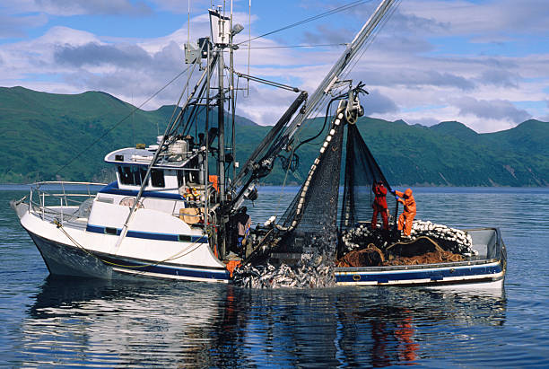

Definición

La pesca marítima es a aquella actividad de pesca que se practica, desarrolla, en las aguas de mar. La pesca marítima está considerada como el tipo de pesca en agua salada, ya que se lleva a cabo en el mar. También, la pesca en océanos se incluye dentro de este grupo. Por el lado contrario nos encontramos con la pesca en agua dulce, que es aquella que se concreta en lagos, lagunas, ríos o embalses. La pesca consiste en la captura y posterior extracción de las aguas, que es su medio natural, de los peces o de tantísimas otras especies acuáticas que abundan en el mar, tales como moluscos y crustáceos.